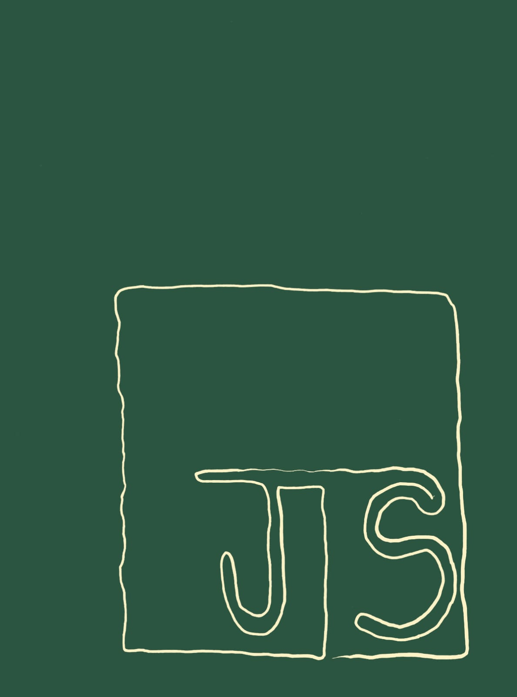

6 Construção de objetos interativos com JSPlotly
JSPlotly é um aplicativo pra criar objetos virtuais de aprendizagem. Com ele é possível criar gráficos 2D e 3D, tabelas, diagramas, fluxogramas, realizar cálculos, produzir objetos tridimensionais, animações, simulações, jogos, sonorização, objetos multimídia (animação+som), entre outros.
Ainda que possibilite isso tudo (e um pouco mais…), apresenta-se como um pequeno arquivo HTML pra ser carregado em qualquer navegador de internet. Assim, JSPlotly não depende de sistema operacional (Windows, Linux, Android, iOS) e nem de dispositivo (desktop, notebook, tablet, celular). Por constituir um pequeno arquivo HTML (< 30kB) e exportar seus objetos nesse formato, pode ser compartilhado junto aos objetos produzidos utilizando-se qualquer meio físico ou digital, incluindo redes sociais.
Depois de explorar, você consegue:
- acessar diversos outros objetos interativos de JSPlotly no site Bioquanti;
- aprender como utilizar os recursos de JSPlotly (interatividade nativa, barra de modos e botões do editor);
- aprender para como utilizar diversos widgets para objetos interativos de JSPlotly;
- compreender como construir um objeto didático de JSPlotly a partir de uma matriz de concepção sugerida, da ideia concebida ao protótipo final;
O JSPlotly é livre !!! Tanto pra baixá-lo como para personalizá-lo, como garantido por sua licença CC BY-NC 4.0. Assim, você pode utilizá-lo, copiá-lo, distribui-lo e mesmo adaptá-lo para fins não comerciais, desde que mencione o autor original, esse humilde vassalo que vos fala.
O site Bioquanti
O aplicativo, suas características, seu modo de uso e mais de 200 objetos de aprendizagem interativos estão abertamente disponíveis junto ao website Bioquanti. O site é uma iniciativa para propagar a ideia de se utilizar código de programação voltado para a construção de objetos didáticos para conteúdos curriculares, tanto para o ensino básico como para o ensino superior, e mesmo para a pesquisa científica. Numa “frasezinha” de efeito: códigos para conteúdos.
O Bioquanti foi desenhado para ser autoinstrucional, ou seja, para que você consiga acompanhar o seu conteúdo e reproduzir/adaptar os códigos para a construção de diversos tipos de objetos didáticos sem necessitar de auxílio externo. Lá você encontrará tutoriais, ebooks, objetos didáticos interativos, códigos diversos, vídeos, e intruções gerais para o uso de quatro programas de distribuição livre.
Esses programas são o JSPlotly, para construção de objetos de aprendizagem interativos variados, o Jmol para visualização tridimensional de moléculas, o R e sua interface gráfica RStudio para tudo que possa pensar em ensino e pesquisa, e o Sisma, um programa feito na UNIFAL-MG para simular a dinâmica de fluxos em um diagrama de forma visual no tempo. Todos esses programas são livres, assim como todos os materiais contidos no site. Veja uma imagem da página principal do site abaixo.

Agora, voltando ao JSPlotly. Quer ver como é simples utilizá-lo ? Dê uma olhada na tela única do aplicativo abaixo.

Estrutura do aplicativo
Observe que o aplicativo é dividido entre uma área gráfica (esquerda) e um editor de códigos com alguns botões (direita). A área de códigos serve para o que naturalmente se apresenta: digitar, colar, ou editar códigos. A área gráfica apresenta a interpretação da linguagem para esses códigos. Os comandos são introduzidos por JavaScript (JS), uma linguagem de programação moderna, utilizada por grandes empresas e big techs, e focada na interatividade, como entre uma página web e o usuário, por exemplo. Diferente de outras linguagens, JavaScript não precisa ser compilada, já que é interpretada a partir de máquinas homônimas contidas em navegadores comuns (browser).
Bom, seguindo nesse tópico sobre a estrutura do aplicativo, clique no link da Figura 6.3 para acessar o JSPlotly. Observe que há um código JS no editor, contendo linhas de comando. Clique no botão “add” abaixo do editor e veja que surge um gráfico de parábola. Esse gráfico, assim como todos os objetos produzidos com o JSPlotly são interativos. Isto quer dizer que você pode interagir com o objeto produzido, no caso o gráfico. Agora passe o mouse sem clicar em nada no objeto produzido, e veja quanta interatividade é visualizada na mudança do ponteiro do mouse: links para sites na barra superior (JavaScript, Plotly.js, Bioquanti, GSPlotly), ícones acima do gráfico, ícone de claro/escuro no canto esquerdo, o próprio gráfico, o botão de carregamento de arquivos (browse), o editor de códigos, e os botões abaixo desse.
Essa interatividade do objeto é garantida por uma biblioteca específica desenvolvida em JavaScript, Plotly.js. Bibliotecas (ou pacotes) são conjuntos de códigos que, quando inseridos num algoritmo, permitem automatizar tarefas dentro de uma linguagem de programação, e sem a necessidade de escrevê-las “do zero”. Há diversas bibliotecas para JavaScript, algumas utilizadas no JSPlotly, como tone.js para sons e p5.js para objetos multimídia.
Redimensionando a página para conforto visual do JSPlotly
JSPlotly foi elaborado para ser responsivo a telas. Isso quer dizer que uma ampliação com zoom pode alterar a disposição da área gráfica e de códigos de sua tela, bem como o tipo de dispositivo utilizado. Se for um celular, por exemplo, a tela poderá alterar esquerda/direita para cima/embaixo, bastando-se colocá-lo na vertical, ou esquerda/direita se o dispositivo ficar na horizontal (com permissão para girar a tela, claro).
Interatividade por mouse, touchpad, ou tela capacitiva
Há diversas formas de interagir com o aplicativo e os objetos gerados por esse, grande parte mediada por mouse em desktop/notebook, por telas capacitivas de smartphones. Ilustrando para uso do mouse, voltemos ao exemplo da parábola abaixo. Depois de clicar no botão add, experimente:
1. Passar o mouse sobre os pontos do gráfico ("mouse over" ou "hover");
2. Desenhar um retângulo em qualquer área para ampliação ("zoom"); retorna-se ao tamanho original com um duplo clique;
3. Usar o "zoom" com o botão de rolagem do mouse;
4. Escrever qualquer coisa nos rótulos do gráfico, como o título, a etiqueta do eixo das abscissas (eixo "X"), e das ordenadas (eixo "Y");
5. Deslocar o gráfico na horizontal/vertical, posicionando o mouse próximo dos algarismos de cada eixo, clicando-se com o botão esquerdo, e arrastando-o ("pan");Botões da barra de modos
Além dessa interatividade básica, o JSPlotly permite várias outras, como a promovida pelos botões da barra de modos (modeBar) logo acima do gráfico, e identificada pelos ícones a seguir:

Da direita para a esquerda os ícones permitem:
1. Inserir um texto próximo de um dado do gráfico, e indicado por uma seta;
2. Trocar a cor do traço do gráfico;
3. Salvar o gráfico como PNG (imagem rasterizada, bom pra web) ou SVG (imagem vetorial, mais precisa);
4. Indicar as coordenadas "x" e "y" de cada ponto no gráfico por linha tracejada;
5. Autoescalonar o gráfico;
6. Inserir um círculo;
7. Inserir um quadrado;
8. Desenhar à mão livre;
9. Desenhar uma reta;
10. Deslocar o gráfico na área por "span";
11. Aplicar um "zoom";
12. Direcionar o gráfico pra edição detalhada por cliques de mouse no site do desenvolvedor, "Chart Studio" (https://chart-studio.plotly.com/create/)6.1 Botões do editor de códigos
Agora uma explicação sobre os botões abaixo do editor de códigos. São 7 botões, para simplificar o carregamento, cópia e compartilhamento, tanto do gráfico interativo, como do código que se encontra no editor, como também para ambos. E até mesmo para o aplicativo em si, personalizado para um determinado código.
O quadro a seguir mostra o que faz cada botão, com detalhes de uso explicado logo em seguida. Mais uma vez, vamos usar a boa e velha parábola como exemplo pra você experimentar a funcionalidade de cada botão.
Ah, sim ! Relembrando, os botões sempre aparecem abaixo do editor de códigos. Mas a disposição do JSPlotly pode variar entre equipamentos. Exemplificando, os botões podem aparecer espalhados abaixo do editor que fica à direita do gráfico, ou empilhados embaixo do editor, por sua vez abaixo do gráfico. Isso depende de qual equipamento você está utilizando para o JSPlotly, se um desktop de mesa, notebook, tablet ou smartphone, e mesmo o nível de zoom da tela do navegador.
# Botões de funcionalidades do JSPlotly:
- "add": adiciona um objeto na área gráfica a partir do código contido no
editor;
- "remove": apaga o último traço de um gráfico/objeto;
- "clean": limpa a área gráfica;
- "delete": limpa o editor de códigos;
- "script": salva o código em formato de texto;
- "html": salva o objeto como arquivo HTML, preservando sua interatividade;
- "clone": copia o código em sua última edição juntamente com próprio JSPlotly
6.1.1 Botão add
O botão add é o principal do editor. Com ele você adiciona o código no interpretador de JavaScript do navegador, possibilitando a construção do gráfico (ou de outro objeto interativo, como veremos adiante). Agora, o botão add possui outra função bem bacana, e que você pode experimentar nesse momento com 2 cliques:
- Clique no add do editor para adicionar a parábola;
- Apague o sinal de “-” que está logo acima no código, na variável “const a = -0.2”;
- Clique novamente no botão add.
Tchan, tchan, tchaaan !!! Veja que agora o gráfico “(add)icionou” mais um traço ao gráfico original. E ainda por cima com cor diferente e legenda !!

E para dar um jeitão mais bacana ao gráfico, dá-lhe outra funcionalidade interativa: a legenda. Veja que você pode clicar e arrastar a legenda para outra parte do gráfico. Além disso, também pode mudar o texto legenda, já que o gráfico sobreposto possui o mesmo título do anterior. Exemplificando:
- Clique no texto em azul na legenda e digite “a = - 0,2”;
- Agora clique no texto em laranja e digite “a = 0,2”
Pronto, agora você tem um gráfico mais “limpinho” na legenda, como no debaixo.

Essa possibilidade com o botão add para adicionar traços é particularmente interessante quando se deseja comparar um gráfico (ou objeto) com outro, para se verificar o que mudou na área gráfica com a alteração do código. Ou seja, isso é muito bom pra explorar parâmetros de uma equação, por exemplo, com vistas a compreender melhor como essa equação funciona quando colocada na forma de um gráfico. O nome chique pra isso é exploração ou manipulação paramétrica. Em resumo, elabora-se um gráfico e o sobrepõe com um ou mais gráficos alterando-se um ou mais parâmetros da equação. No caso de um objeto diferente de um gráfico, a exploração dá-se com mudança de outros detalhes do código (com cores, por exemplo).
Botão remove
Tá em inglês, mas poderia tranquilamente ser compreendido em língua pátria, mesmo. Esse botao remove o último traço adicionado na área gráfica. Sua utilidade é também importante, pois permite que se retire de um gráfico um ou mais traços que não ficaram do jeito que se desejava. Exemplificando, digamos que para a parábola do exemplo acima o legal seria comparar o efeito da constante “a” com um valor que não fosse somente pela retirada do sinal negativo. A figura abaixo ilustra como ficaria o gráfico se você “(remove)”esse esse traço e adicionasse outro, com valor diferente para a constante.


Botões clean e delete
Esses botões servem para limpeza. O botão clean atua limpando a área gráfica. Pode ser que às vezes “sobre” alguns elementos de interatividade de um gráfico anterior, como uma barra deslizante, por exemplo. Nesse caso, o melhor é recarregar a tela do navegador (Ctrl+F5 ou Ctrl+R, dependendo do browser, ou um botão à esquerda de sua barra de endereços).
Já o botão delete limpa o editor de códigos, o que pode ser útil quando se deseja colar aí um novo código, por exemplos.
Botão script
Esse botão permite que você salve o código para recuperá-lo futuramente, para editá-lo num outro momento, ou para compartilhá-lo com alguém. Ele é salvo com o atributo js indicando tratar-se de um código em JavaScript para carregamento no JSPlotly pelo botão browser. Mas você pode personalizar o nome, e abri-lo em qualquer editor de texto, mesmo num simples bloco de notas.
O botão é particularmente útil quando se deseja compartilhar o código, e mesmo guardá-lo para um uso futuro, para montar uma biblioteca e códigos, ou para instruir um assistente de IA generativa para incrementar o código, ou produzir um código semelhante.
Botão html
Esse botão é o “mais charmoso”. O html permite que você salve o gráfico ou qualquer outro objeto interativo num arquivo HTML, por óbvio. Mas o “chique da coisa” é que o arquivo é autossuficiente (self-contained). Na prática isso quer dizer que ele guarda toda a interatividade contida no objeto interativo original, incluindo ações de mouse/dedo, animações, sonorização, e widgets.
Assim, você pode rodar um código e, apreciado o objeto que resulta desse, salvá-lo numa mídia física para uso pessoal, estudo futuro, armazenamento simples, como também para distribui-lo a quem desejar, incluindo o seu compartilhamento por redes sociais ! Que tal experimentar isso agora ?!
Com a boa velha parábola (código padrão que vem com o JSPlotly) do aplicativo vivo abaixo:
- Clique em add para adicionar o gráfico, como já fez antes;
- Passe o mouse na área gráfica (ou os dedos no touchpad do notebook, ou na tela capacitiva do celular), e clique em algum ícone da barra de modos (o de câmera, por exemplo, pra mudar a cor do traço);
- Clique em html e salve o arquivo no dispositivo (notebook, celular, etc).
- Abra o arquivo salvo e veja que ele retém toda a interatividade do objeto, incluindo a personalização realizada (cor do traço, por ex).
Só pra te mostrar como fica, veja a imagem abaixo, uma representação viva do que faz o botão html. Basta clicar na imagem para acessar a velha e boa parábola que vem como padrão no JSPlotly, mas como um arquivo interativo pronto pra estudo ou compartilhamento (Figura 6.7) !

Botão clone
Esse botão é o mais “disruptivo”, como se diz nesses tempos. O clone cumpre a função que seu nome apresenta, ou seja, ele “clona” o JSPlotly com um código específico, já customizado ou não. Isso é particularmente útil quando se quer não apenas guardar/compartilhar um código (botão script) ou um objeto interativo (botão html), mas sim quando se deseja guardar/compartilhar o aplicativo inteiro com o código padrão escolhido e já customizado.
Dessa forma, o botão clone agrega um valor a mais, já que possibilita trabalhar com um objeto interativo juntamente com seu código, facultando a edição desse para personalização do objeto. Ilustrando seu uso prático, quando se deseja guardar/compartilhar um objeto e seu código para aprimoramento, por exemplo.
Embora funcione muito bem para a maior parte de códigos criados com JSPlotly, o botão clone pode não operar junto a códigos que exigem sintaxe mais elaborada. Nesse caso, é preferível salvar o código pelo botão script, mesmo.
Como visto nas seções anteriores, o JSPlotly trabalha com códigos de programação ! São comandos escritos em linguagem JavaScript, a qual é interpretada junto a máquinas homônimas de navegadores modernos (ex: Chrome, Firefox, Safari, Opera, Edge, etc). Agora…convenhamos…além de amantes da computação, quem gosta de códigos de programação ?!
Pensando nisso, foi desenvolvido junto ao aplicativo um gerador de códigos para o JSPlotly por assistente de inteligência artificial (IA) !!! Isso quer dizer que você não precisa saber nada sobre programação !!!.
Quer fazer um teste ?
Clique no link do GSPlotly (G para gerador) ou na imagem abaixo, e peça ao gerador para construir alguma coisa…digamos….
…“faça um gráfico de barras sobre as principais regiões de terras raras”…

Observe que o GSPlotly fornece o código JavaScript quase que instantaneamente, e ainda por cima dá algumas dicas pra melhoria do próprio código !
Agora é só copiar o código pelo ícone que aparece no canto superior direito (“copy code”) e rodar no JSPlotly. Para isso:
- Copie o código;
- Clique em delete no JSPlotly abaixo;
- Cole o código;
- Clique em add.
Se deu tudo certo, você deverá ver algo parecido com a imagem abaixo:

Algumas dicas para uma “boa conversa” com o GSPlotly
Elaborar um gráfico, mapa, animação, simulação, sonorização, e mesmo um game inteiro no JSPlotly com auxílio de um bot de IA como o GSPlotly é plenamente possível (vide os objetos virtuais disponíveis para ensino básico ou ensino superior no site Bioquanti). Contudo, há objetos virtuais mais simples (um gráfico, por exemplo) e mais complexos (um objeto multimídia, por exemplo) e, para isso, faz-se necessário um “toma-lá-dá-cá” entre você e o assistente de IA, dependendo do grau de complexidade do objeto virtual pretendido.
Algumas rápidas orientações para que essa comunicação (engenharia de prompts) seja eficiente são sugeridas abaixo.
1. Fundamentalmente, não desista da 1a. vez !! Por vezes a IA não entrega o que se deseja de primeira, exigindo uma troca de informações entre o usuário e o bot para que se atinja o objetivo do primeiro;
2. Se a IA não lhe devolver o que deseja nas primeiras tentativas, comece com algo mais simples;
3. Se mesmo o simples não resolver, reduza a complexidade da solicitação. Separe o problema em partes, e tente a solução para a parte mais básica do problema; só depois de obtida (testada no JSPlotly), solicite à IA a solução para uma nova parte a acrescentar junto a que foi bem sucedida. (isso é "parte" do chamado "pensamento computacional"...ou....sem trocadilhos, "dividir para conquistar"!);
4. Experimente oferecer o código que ainda não está a seu gosto para outro assistente de IA, para correção ou melhorias. Você pode fazê-lo simplesmente copiando o código e colando-o num outro bot de IA, ou por carregamento nesse após salvá-lo como arquivo no JSPlotly com o botão "script", ou mesmo como um arquivo de texto;
5. Experimente também, ao invés de "prompts" de texto, carregar uma imagem, como um gráfico, uma tabela, ou outra figura; e pedir para o GSPlotly alterá-la de alguma forma (produção de gráfico a partir de tabela ou de imagem, por ex.);
5. Aprenda a conhecer linguagem aos poucos (JavaScript). Isso lhe dará maior autonomia e segurança, tanto pra lidar com bots de IA, como para corrigir e aprimorar códigos "sem auxílio da IA". E mesmo para "desenvolver novos códigos sozinho" !!!Frente ao potencial para interatividade que acompanha as linguagens de JSPlotly, vale a pena ilustrar algumas ferramentas interativas ágeis, ou widgets, e que podem agregar valor substancial aos códigos do aplicativo em qualquer tema. Para isso, experimente clicar em add para cada exemplo que segue, e percorra sua funcionalidade.
Tooltips
Tooltips são mensagens popup visualizadas com o movimento do mouse - hover sobre um dado do objeto interativo (ex: gráfico, mapa).

Caixa de mensagem (textarea)
Utiliza-se caixa de mensagem quando se deseja que uma ação do objeto seja precedida por uma informação fornecida pelo usuário.

Barra deslizante (slider)
Recomenda-se o uso de slider nos casos em que há 1) mudanças em variável numérica (o slider reflete aumento ou redução) ou 2) variável categórica com mais de 4 ítens (contorna a poluição visual de um Menu).

Menu suspenso (update menu)
Menu é melhor empregado para variáveis categóricas.

Deslizador de intervalo (rangeslider)
Recomenda-se rangeslider nos casos em que houver 1) um gráfico multifásico, um gráfico muito recortado, ou para séries temporais.

Caixa de seleção (checkbox)
Checkbox é melhor empregado quando se deseja visualizar mudanças simultâneas, já que o widget permite seleção múltipla.

Botões
Botões são recomendados quando se deseja refletir uma mudança mutuamente exclusiva na área gráfica do objeto.

Botões de rádio (radio buttons)
Radiobuttons são empregados como alternativa aos botões normais, embora com menor área para clique de mouse.

Cartão (reativo)
Cartões são usados para destacar um valor obtido pela ação do objeto. Quando interativos, os cartões possuem valores atualizados automaticamente junto ao código.

Gauge (reativo)
O gauge expressa um valor relativo frente a um valor máximo. Quando reativo, esses valores variam ao longo dos frames do objeto.

Gauge linear (reativo)
Similar ao gauge, embora representado por uma barra, e não por um velocímetro (speedmeter).

Construir um objeto didático-científico no JSPlotly não requer qualquer maestria: basta uma perguntinha ao GSPlotly !!
Por outro lado, se desejar algo mais elaborado, com propósito, entradas e saídas claras, com usabilidade otimizada ao usuário, além de componentes interativos que agreguem valor e estímulo às descobertas do aprendiz com o objeto criado…bom, então é melhor seguir um roteiro estruturado. Nesse caso, sugere-se o fluxo abaixo, e com ítens descritos na sequência.
Concepção –> Desenvolvimento –> Avaliação
Matriz de concepção de objetos didáticos com JSPlotly
- Ideia principal;
- Objetivos;
- Classe do objeto;
- Tipo de objeto;
- Nível de interatividade;
- Conceitos prévios;
- Grau de abstração;
- Feedback ao usuário;
- Heurísticas;
- Protótipo
Ideia principal
Apesar de autoexplicativo, sugere-se que uma ideia de objeto didático-científico para o JSPlotly deve levar em conta que:
“Um objeto = Uma pergunta”
Assim, a concepção do objeto deverá exprimir uma situação-problema específica, e que auxilie o aprendiz/audiência na sua interpretação, reduzindo a carga cognitiva e mesmo computacional para validar o objeto.
Exemplo: simular um biorreator simples
Objetivos
Os objetivos podem refletir o que se deseja que o objeto “faça” para convergir à melhor compreensão da situação-problema. Nesse caso, sugere-se responder a si próprio….
“se eu quisesse aprender sobre o tema, em que esse objeto me ajudaria ?”
Exemplo:
- Representar graficamente a variaçao de biomassa, substrato e produto ao longo do tempo;
- Permitir que o usuário altere os parâmetros iniciais, como teor de substrato, taxa de crescimento, e rendimento celular;
- Favorecer a compreensão das relações entre consumo de nutrientes, crescimento celular, e formação de metabólitos;
- Simular cenários simples de operação para comparar diferentes condições de cultivo;
- Estimular a interpretação de curvas típicas de bioprocessos em contexto introdutório para Química e Biotecnologia.
Classes de objetos
São diversos os tipos de objetos didático-científicos que se pode empregar para auxílio em determinada situação-problema. Ilustrando-se, desde uma ferramenta de anaĺise de dados, um objeto multimidático, um mapa com animção, ou um simples gráfico. Independentemente do tipo de objeto que se deseja ilustrar, contudo, é interessante definir previamente a tipologia ou classe do mesmo. Nesse caso, sugere-se as seguintes classes:
| Classes de objeto | Caracterização |
|---|---|
| Visualizador | Apresenta relações conceituais ou dados já definidos, permitindo observação interativa, em caráter predominantemente demonstrativo. |
| Simulador | Permite alterar parâmetros e observar efeitos em um modelo simplificado. |
| Calculadora interativa | Permite ao usuário inserir valores e obter resultados quantitativos. |
| Explorador de cenários | Permite comparar diferentes configurações, condições ou situações. |
| Jogo conceitual | Introduz desafios ou tarefas que exigem aplicação de conceitos científicos. |
Exemplo:
Um simulador.
Tipos de objetos
Aqui mora a diversão !!!!
Uma vez definida a classe de objeto (ou não), e a depender dos objetivos propostos e mesmo da área científica em que o objeto deverá inserir-se, pode-se optar por uma gama ampla de tipos, elencando-se:
- Gráficos interativos (e subtipos);
- Mapas interativos (e subtipos);
- Simulações científicas;
- Animações (objetos, gráficos, mapas);
- Paineis (dashboards);
- Experimentos virtuais;
- Sonorização;
- Jogos educativos;
- Instrumentos musicais digitais;
- Objetos multimídia interativos;
- Games;
- Visualizadores de dados;
- Treinadores de programação;
- Interfaceamento com hardware (celular, Arduino).
Exemplo:
Simulação baseada em gráfico interativos (2D), permitindo a visualização dinâmica das variáveis do biorreator ao longo do tempo.
Níveis de interatividade
| Nível | Características |
|---|---|
| Passivo | O usuário apenas observa resultados, animações ou representações. |
| Reativo | O usuário aciona comandos simples para visualizar respostas do sistema. |
| Manipulável | O usuário ajusta parâmetros ou variáveis do sistema. |
| Exploratório | O usuário formula hipóteses, constrói cenários próprios e investiga consequências. |
Em paralelo aos níveis propriamente ditos, pode-se complementar o quesito com a sugestão de widgets ou componentes variados para agregar valor ao objeto, tanto sob o aspecto de usabilidade, quanto pedagógico (vide seção anterior). Entre os mais comuns:
- Tooltips;
- Caixa de mensagem (textarea);
- Barra deslizante (slider);
- Menu suspenso (update menu)
- Deslizador de intervalo (rangeslider);
- Caixa de seleção (checkbox);
- Caixa de texto;
- Botões;
- Botões de rádio (radio buttons);
- Cartão;
- Gauge;
- Gauge linear.
Exemplo:
Manipulável, com variações nos parâmetros por slider simples.
Conceitos prévios
Aqui é, no dizer dos apaixonados por games, um jogo aberto! Há que se ter em mente apenas quais são os pressupostos necessários para que o usuário agregue valor com o uso do objeto, para que não se perca em conceitos e definições inexistentes em sua zona proximal de desenvolvimento. Nesse caso, bastam poucos pressupostos, e não um conhecimento avançado sobre o que envolve a situação-problema.
Exemplo:
Assume-se que o aprendiz entende que microorganismos crescem ao longo do tempo consumindo substratos energéticos. Assume-se também que ele saiba interpretar relações em um plano cartesiano (letramento gráfico). Por outro lado, para uso do simulador de forma acessível, útil, e mesmo escalável num segundo momento, aceita-se que não é necessário o conhecimento da equação de Monod, de modelagem matemática avançada ou de balanços diferenciais de massa.
Grau de abstração
Indica o nível de representação do fenômeno observado, e pode representar:
| Nível | Caracterização |
|---|---|
| Concreto | Fenômenos ligados a situações cotidianas ou observáveis diretamente. |
| Intermediário | Relação entre grandezas físicas, químicas ou biológicas e modelos simplificados. |
| Abstrato | Interpretação conceitual, simbólica ou sistêmica de fenômenos. |
Exemplo:
Intermediário.
Feedback ao usuário
Trata-se de incluir a forma de retorno fornecida pelo objeto. Essa pode concretizar-se por diversas indicações visuais, tais como as mediadas por:
- Mensagens interpretativas;
- Cor;
- Gráfico;
- Tabela;
- Valor numérico;
- Alerta (pop up);
- Comparação com referência;
- Mensagem de erro;
- Som;
- Anotação.
Exemplo:
Atualização dinâmica dos gráficos de biomassa, substrato e produto, permitindo ao usuário perceber diretamente os efeitos das alterações nos parâmetros do sistema.
Heurísticas
Heurísticas constituem pressupostos para avaliação de usabilidade de um sistema, convergindo para que seja compreensível, previsível e fácil de usar. Os pressupostos mais comumente encontrados, e reportados para objetos midiáticos, como software e páginas de web, envolvem as *dez Heurísticas de Jacob Nielsen* para usabilidade e design de interfaces. Essas heurísticas avaliam:
- Visibilidade do estado do sistema
- Correspondência entre sistema e mundo real;
- Controle e liberdade do usuário;
- Consistência e padrões;
- Prevenção de erros;
- Reconhecimento invés de memorização;
- Flexibilidade e eficiência de uso;
- Design estético e minimalista;
- Ajuda para reconhecer e recuperar erros;
- Ajuda e documentação.
Outras classificações heurísticas observam princípios distintos ou complementares aos de Nielsen, como as regras de ouro para design de interfaces (Shneiderman - interação humano-computador), os princípios de design de Norman (centrado no usuário), os princípios de design para aprendizado multimídia (Mayer), os princípios de design de interação* (Preece, Rogers e Sharp), e os princípios de visualização da informação de Ware.
Para a criação de objetos no JSPlotly buscou-se unificar as heurísticas mais relevantes. Em suma, pode-se validar um objeto didático ao JSPlotly para poucos pressupostos:
| Dimensão | Objetivo |
|---|---|
| Clareza conceitual | Garantir compreensão do fenômeno representado |
| Usabilidade da interface | Facilitar manipulação e navegação |
| Eficiência cognitiva | Reduzir carga cognitiva desnecessária |
| Percepção visual | Facilitar interpretação de gráficos e dados |
De forma ainda mais enxuta…
- Visibilidade do estado do sistema;
- Controle e liberdade do usuário;
- Reconhecimento em vez de memorização;
- Design minimalista e eficiência da interação.
Por outro lado, pode-se ampliar a avaliação de heurísticas para cobrir um espectro maior de possibilidades, como descrito abaixo:
| Heurística | Caracterização |
|---|---|
| Visibilidade do estado do sistema | O sistema deve informar claramente ao usuário o que está acontecendo, por meio de respostas visíveis, saídas gráficas, mensagens ou indicadores. |
| Correspondência com o mundo real | A interface e os objetos devem dialogar com convenções, linguagem e situações familiares ao usuário. |
| Controle e liberdade do usuário | O usuário deve poder iniciar, interromper, ajustar, refazer ou limpar ações sem dificuldade. |
| Consistência e padrões | Botões, comandos, símbolos e comportamentos devem manter regularidade ao longo do objeto didático. |
| Prevenção de erros | A construção do objeto deve minimizar ações equivocadas e reduzir ambiguidade de uso. |
| Reconhecimento em vez de memorização | Elementos da interface devem ser facilmente identificáveis, dispensando lembrança prévia de comandos complexos. |
| Design minimalista | A interface deve evitar excesso de informação, mantendo foco nos elementos essenciais à atividade. |
| Ajuda para reconhecer erros | O sistema deve facilitar a identificação de falhas, inconsistências ou entradas inadequadas. |
| Ajuda e documentação | O objeto pode trazer instruções, exemplos, legendas, dicas ou materiais de apoio ao uso. |
| Eficiência da interação | O uso deve ser fluido, com poucos passos, respostas rápidas e boa relação entre esforço e resultado. |
Exemplo:
- Correspondência com o mundo real: termos reais utilizados em bioprocessos, unidades coerentes;
- Visibilidade do estado do sistema: observação de curvas de crescimento microbiano;
- Controle e liberdade do usuário: sliders e ajustes de parâmetros;
- Reconhecimento ao invés de memorização: nomes claros para os termos técnicos (biomassa, substrato, etc);
- Design minimalista: estrutura básica para ensino.
Protótipo
Para o exemplo de um biorreator simples, tal como ilustrado acima, segue uma sugestão para obtenção direta ou engenharia de prompts sequencial frente ao GSPlotly, e obtenção do código na sequência:
Exemplo:
Fazer um simulador simples de biorreator. Mostrar em gráfico o crescimento da biomassa, a queda do substrato e a formação de produto. Colocar controles para mudar os valores iniciais e ver o resultado na hora. Deixar visual limpo e fácil de mexer.
A Figura interativa que segue ilustra o resultado obtido numa única interação com GSPlotly utilizando-se o prompt acima. O script para o simulador de biorreator pode ser obtido diretamento clicando-se na imagem.
Observe que, à despeito da complexidade do código em suas 269 linhas de programação, bem como da relativa simplicidade de seu produto final, ambos agregam valores ímpares ao aprendiz. Dito dessa forma, o código pode ser melhorado, por um lado, ao mesmo tempo em que o aprendiz incrementa sua percepção e uso das linguagens envolvidas, capitaneando competências digitais com um mínimo esforço, mas com proeminente diversão !!

Estruturas de Controle
Assim como para linguagens de programação diversas, estruturas de controle em JavaScript direcionam o fluxo de execução do código (ordem, condições). Os fluxos de controle mais comuns são os condicionais e de repetição:
// Condicionais
if // executa um bloco de código se uma condição for verdadeira
else // executa um bloco de código se a condição do if for falsa
else if // verifica múltiplas condições em sequência
switch // executa diferentes blocos de código com base no valor de uma expressão
// Repetição
for // laço com contador: inicialização; condição; atualização — ideal quando o nº de iterações é conhecido
while // laço por condição: repete enquanto a condição for verdadeira (condição testada ANTES de cada volta)
do while // laço pós-teste: executa AO MENOS uma vez e repete enquanto a condição for verdadeira (testada DEPOIS)Estruturas condicionais
Para as estruturas condicionais, seguem alguns exemplos.
IF
A sintaxe de declaração dessa função é:
if (condição) execute isto quando verdadeiroSeguem exemplos pra testes logo abaixo do 1o.
// if
let idade = 18;
if (idade >= 18) {
print("Você é maior de idade.");
}
// saída: Você é maior de idade.ELSE
A sintaxe de declaração dessa função é:
if (condição) { execute isso quando verdadeiro
}
else {quando falso, execute essa alternativa
}// else
let idade = 15;
if (idade >= 18) {
print("Você é maior de idade.");
} else {
print("Você é menor de idade.");
}
// saída: Você é menor de idade.ELSE IF
A sintaxe de declaração dessa função permite ramificação múltipla (branching):
se (condição) {
execute isso quando verdadeiro
}
else if (condição) {
execute isso quando verdadeiro
}
else if (condição) {
execute isso quando verdadeiro
}
else {
execute isso quando falso
}
// else if
let nota = 75;
if (nota >= 90) {
print("A");
} else if (nota >= 80) {
print("B");
} else if (nota >= 70) {
print("C");
} else {
print("D");
}
// saída: CSWITCH
A sintaxe de declaração dessa função também permite branching múltiplo.
switch (expressão) {
case 1: execute isso quando se adequar; break
case 2: execute isso quando se adequar; break
case 3: execute isso quando se adequar; break
default: execute isso quando não houver adequação
}
// switch
let dia = "segunda";
switch (dia) {
case "segunda":
print("Dia de trabalho.");
break;
case "sábado":
print("Dia de descanso.");
break;
default:
print("Dia comum.");
}for (let i = 0; i < 5; i++) {
// saída: Dia de trabalho.Estruturas de repetição
Seguem alguns exemplos para as estruturas de repetição em JavaScript.
FOR
for (let i = 0; i < 5; i++) { A sintaxe de declaração dessa função é:
for (inicializador; condição; modificador) {
execute isso
}// for
for (let i = 0; i < 5; i++) {
print(i);
}
// saída:
// 0
// 1
// 2
// 3
// 4Como para os últimos capítulos desse livro, experimente algumas estruturas de controle no JSPlotly de treinamento para JavaScript como abaixo.

FOR…IN
// for...in
let pessoa = { nome: "João", idade: 30 };
for (let propriedade in pessoa) {
print(propriedade + ": " + pessoa[propriedade]);
}
// saída:
// nome: João
// idade: 30FOR…OF
// for...of
let numeros = [1, 2, 3];
for (let numero of numeros) {
print(numero);
}
// saída:
// 1
// 2
// 3WHILE
A sintaxe de declaração dessa função é:
while (condição) {
execute isso
modificador
}// while
let contador = 0;
while (contador < 3) {
print(contador);
contador++;
}
// saída:
// 0
// 1
// 2DO…WHILE
do {
execute isso
modificador
}
while (condição)
// do...while
let i = 0;
do {
print(i);
i++;
} while (i < 5);
// saída:
// 0
// 1
// 2
// 3
// 4Chegamos ao final desse treinamento em JavaScript. É claro que há um mundo inteiro a explorar sobre a linguagem e sua aplicação junto ao JSPlotly, bem como a inúmeros outros objetos interativos. Mas acreditamos que os últimos capítulos nesse labor já dão um bom começo !!!